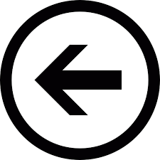

| EPIs são Equipamentos de Proteção Individual utilizados individualmente por um trabalhador durante sua atividade laboral. Eles são essenciais para a proteção do trabalhador, visando a manutenção de sua saúde física e proteção contra os riscos de acidentes do trabalho e/ou de doenças profissionais e do trabalho. |
